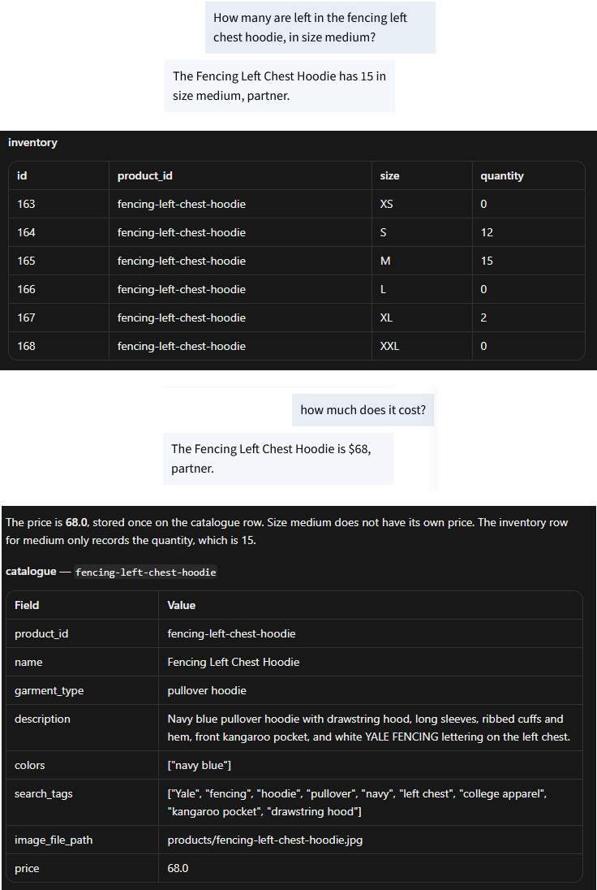
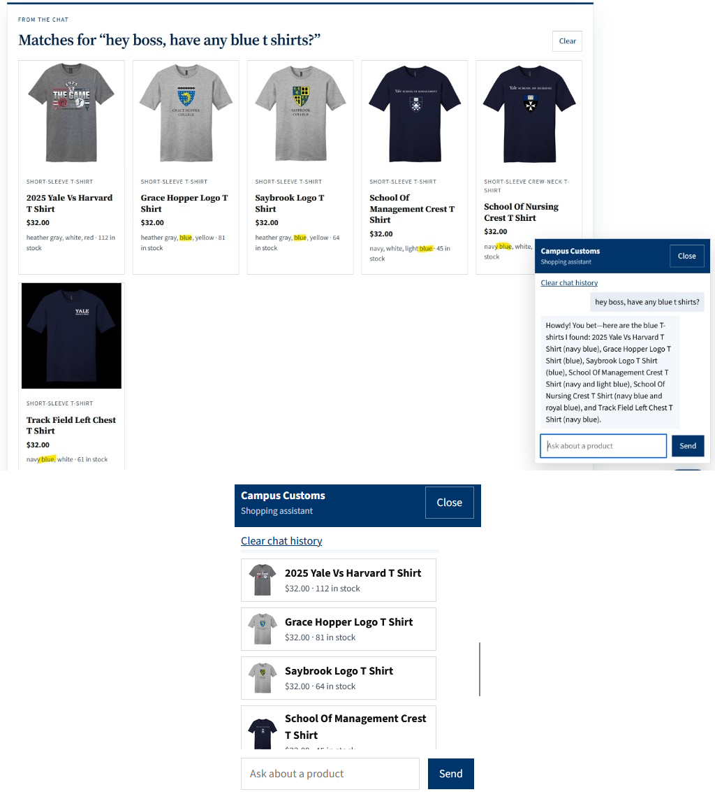
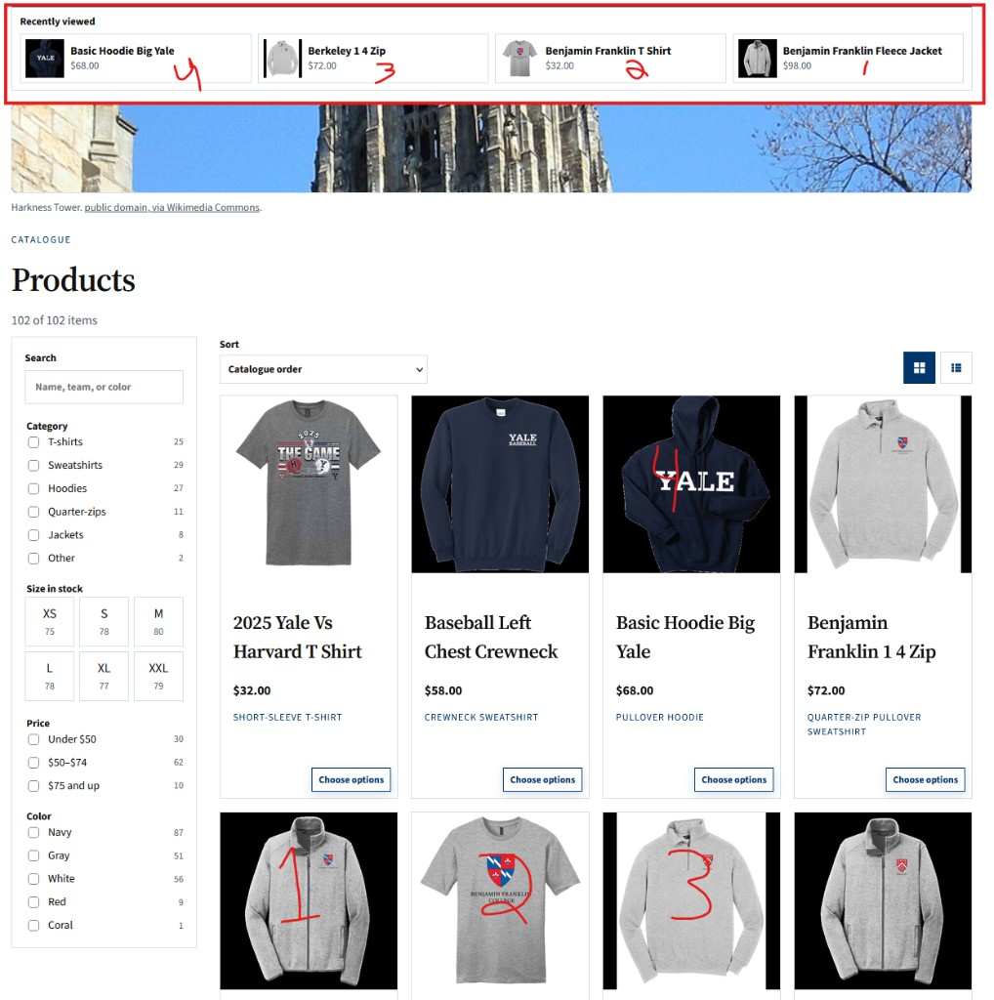

Problem 11: Site testing
Three checks of the live Campus Customs site. Each section is one check, one screenshot, and what that screenshot proves.
1. Chat checks inventory
Check #1 - verifies the chatbot correctly imports the size, quantity, and prices from the database. Screenshot shows user asking for Fencing Left Chest Hoody in Medium, and returns 15 in stock and $68 price, which matches the database fields.

2. Search cards after a category question
Check #2 - verifies that a chatbot request for blue shirts pulls up shirts that are in fact blue. Screenshot verifies that both the product boxes and chat window show blue shirts, like the School of Management Crest t-shirt. Please note the first shirt, 2025 Yale Vs harvard T Shirt, does in fact come in Nacy blue although that particular color isn't pictured in the short description box, and is therefore correctly included.

3. Recently viewed
Check #3 - I added a "recently viewed" panel so users could flip back and forth with four recent items. The screenshot proves the last four items i clicked show up at the top Recently Viewed items bar in corresponding order (see numbers in red text)
